Существует множество способов создания коллажей в фотошопе, приведем в пример два наиболее подходящих для новичка. Вы можете комбинировать их или научиться новым способам по мере своего продвижения в освоении фотошопа.
Первый способ. Он также является наиболее простым, потому как не требует никаких технически сложных работ фотомонтажа. Однако и с помощью него вы можете получить хороший свадебный или любительский коллаж.
1. Создайте новый фон («Файл» — «Создать…» Ctrl+N), который послужит основой для будущего коллажа. Содержимое фона можно любое как сплошной цвет так и прозрачный
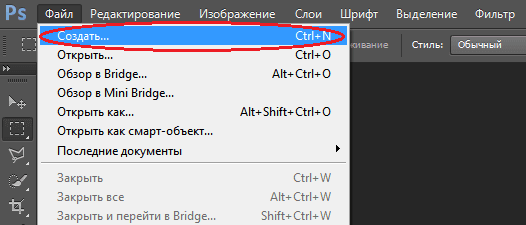
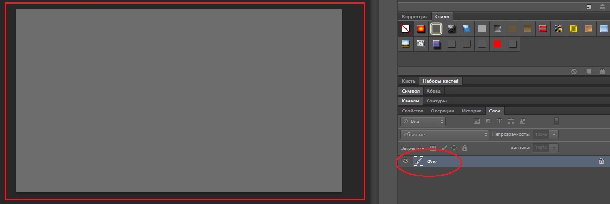
2. Откройте необходимые фотографии («Файл» — «Открыть…»)
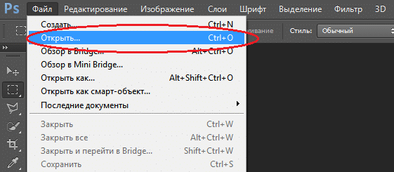
3. Перейдите на первое из открытых изображений и выделите фотографию при помощи инструмента «Прямоугольная область». (Также вы можете выделить целое фото, нажав «Выделение» — «Все» либо Ctrl+A)
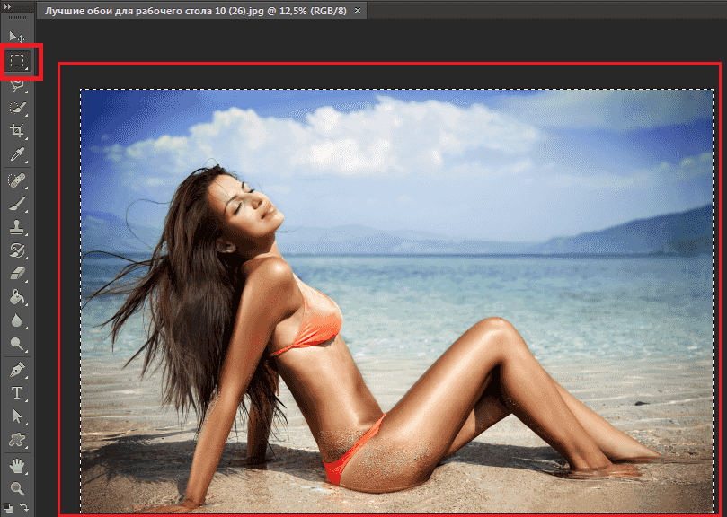
4. Скопируйте изображение («Редактировать» — «Копировать» либо Ctrl+C)
5. Найдите вкладку с фоном коллажа
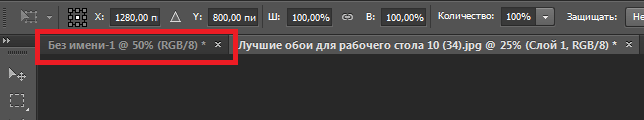
6. Вставьте в нее фотографию, нажав «Редактировать» — «Вставить» либо Ctrl+C. Изображение окажется на фоне и в слоях появится новый слой.
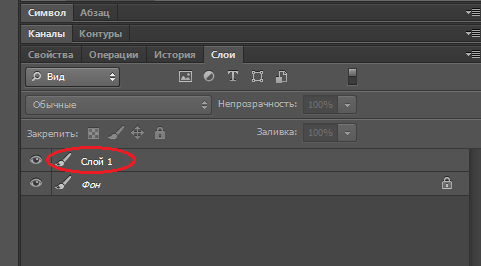
7. Чтобы скорректировать его расположение нужным нам образом, выберите «Масштабирование->Трансформирование» во вкладке «Редактирование» и перетащите фото на необходимое место. (Параллельно вы можете поколдовать с его размером — увеличить, либо уменьшить.)
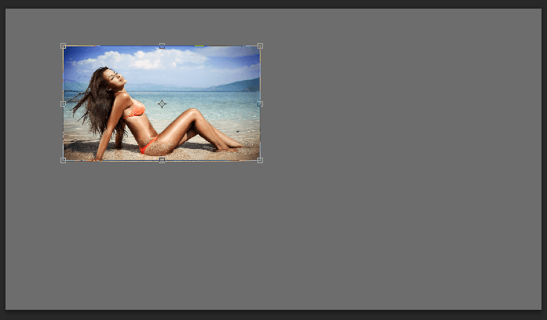
8. В той же вкладке «Редактирование» — «Трансформирование» есть функция «Поворот», применив которую, вы сможете повернуть изображение на любой угол.
9. Проведите аналогичные операции над оставшимися изображениями. Закончив, перейдите в раздел «Слои» и, щелкнув правой кнопкой мыши по слою фона, выберите «Объединить видимые». Таким образом ваш коллаж станет единым изображением, а не рядом отдельных слоев.
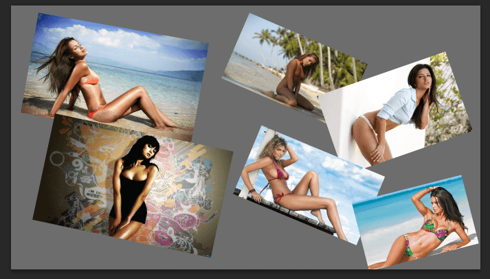
10. Теперь сохраните готовый коллаж.
Подсказка! для быстрой работы с несколькими фото можно в папке с нужными фотографиями выделить несколько и перетащить на создаваемый коллаж.
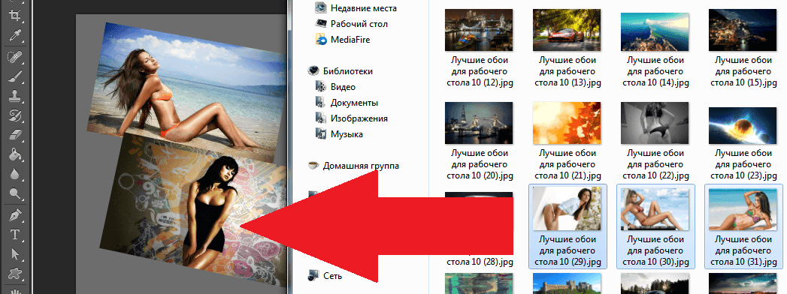
Второй способ создания коллажа в фотошопе.
Этот вариант уже интереснее, а применяя его вместе с другими вы добьетесь весьма занятных эффектов.
Откройте фотографию и дважды кликните «Фон» в разделе «Слои». Откроется меню создания нового слоя, в котором не следует ничего менять, просто нажать «Да».
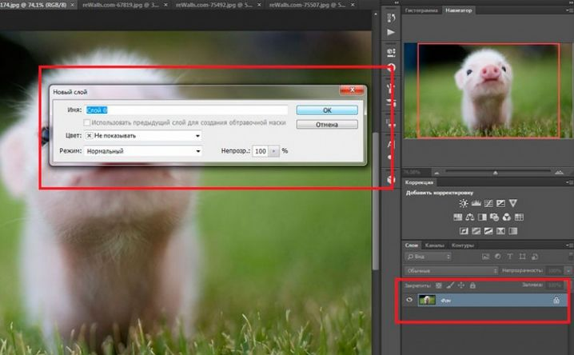
При помощи этой операции вы превратили фон в обычный слой, на который теперь возможно наложить маску. В этом же разделе «Слои», нажмите кнопку «Создать новый слой». Созданный «Слой 1″ перетащите вниз.
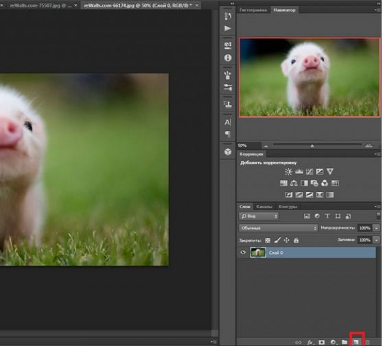
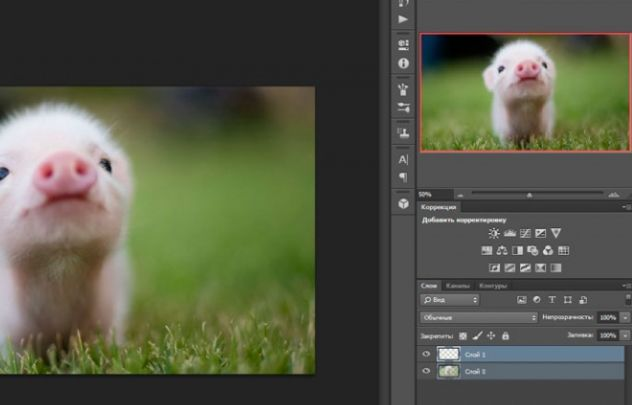
Теперь самое важное. Новый «Слой 1″ сделайте белого цвета при помощи инструмента «Заливка». Обратите внимание, что основные цвета должны быть белым и черным. При других выбранных цветах — верните стандартные, как это продемонстрировано на скриншоте.
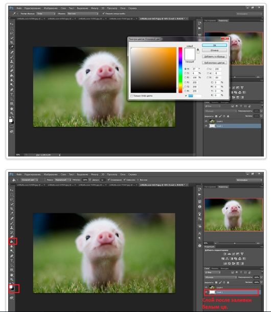
После заливки, активируйте единичным кликом «Слой 0″, который раньше был фоном и нажмите «Создать слой-маску». Теперь откройте меню кистей («Окно» — «Кисти» или нажав сочетание клавиш «B» и «F5″)
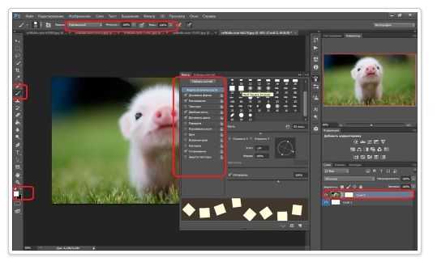
В открывшемся окне выберите понравившуюся кисть и настройте ее при помощи обширного выбора функций. Надо сказать, это самый захватывающий момент работы, где вы можете применить всю безграничность своей фантазии!
Нарисовав все, что хотели, возвратитесь в раздел «Слои» и выберите «Применить слой-маску», как показано на скриншоте (или перейдите в меню «Слои» — «Слой-маска» — «Применить»). Объединяете слои — и ваш коллаж готов!
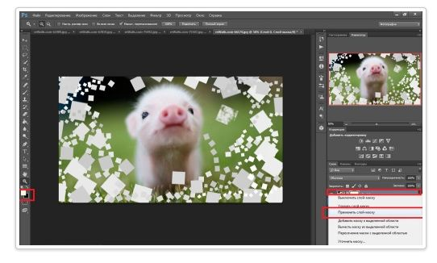
Самое интересное, что создание коллажей — это не строгая последовательность действий, которую нужно неукоснительно соблюдать. Все инструкции созданы лишь для того, чтобы показать вам возможности, предлагаемые фотошопом, и научить вас ими пользоваться.
Вы можете комбинировать инструменты и техники, изменять прозрачность, цвета и фактуры слоев, накладывать их друг на друга в любом порядке, фантазировать с новыми кистями, наборы которых вы можете скачать отдельно в интернете, и применять в коллаже специальные эффекты, которыми так славятся последние версии фотошопа.
Дело только за вашей фантазией!
ОТЛИЧНО
Что, не понял
Идеально! Надо попрактиковаться
спасибо … всё понятно для особо тупых…как я….
Все просто и понятно!!! Спасибо!